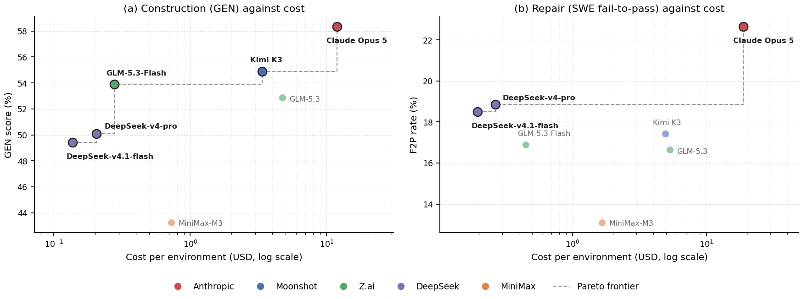

Cost
Measured token usage for the seven models instrumented under Claude Code, repriced at each vendor's published API rates, against what those runs actually scored.
The appendix reports a billed cost per run and that figure is exact, but it is not a price comparison. Reading it as one inverts the answer.
All instrumented runs went through Claude Code, whose harness computes cost from Claude Opus 5's price table regardless of which model served the request. Fitting the reported cost against the four token counts recovers $5.00 input, $0.50 cache read and $25.00 output per million in all sixteen model-setting cells, with cache writes at Anthropic's own tiers. Holding that one price table fixed reproduces the reported cost to within 1% on 98.1% of the 800 runs. The column measures token volume in dollar units, not what a model costs.
Each result event carries uncached input, cache read, cache write and output separately, so cost can be recomputed rather than approximated. This matters more than usual here: cache reads are 95.9–99.1% of all input tokens in these runs, and vendors discount them by 90% or more, so any estimate that ignores the cache split is wrong by an order of magnitude.
At list prices the spread across these seven models is a factor of 87, against 2.2 in the billed column. DeepSeek-v4.1-flash builds a world for $0.14 where Claude Opus 5 costs $11.91, for 8.9 points less GEN. Scores are unchanged throughout; only the cost axis is recomputed.
Cost per environment on a log axis, because list prices span nearly two orders of magnitude. A model sits on the frontier when nothing cheaper scores as well.

Means over 50 runs per cell, one run per common environment, deduplicated to the latest attempt. Token columns are counts per run; cost columns are USD per run.
| Model | GEN | F2P | Input | Cache read | Cache write | Output | GEN cost | SWE cost | $/GEN pt | Billed at Opus rates |
|---|
Frontier models are marked. Click a column heading to sort.
Published list prices in USD per million tokens, retrieved 2026-09-28. Where a vendor does not price cache writes separately, the input rate is used.
| Model | Vendor | Input | Cache read | Cache write | Output |
|---|
Claude Opus 5 uses the 1-hour cache-write rate of $10 rather than the 5-minute $6.25, because every cache-creation token in these logs sits in the 1-hour bucket. DeepSeek-v4-pro uses the 75% reduction of 2026-05-23, which became the standing list price; the pre-cut $1.74/$3.48 sticker is historical. DeepSeek-v4.1-flash uses off-peak rates, and peak hours are exactly double. GLM-5.3-Flash uses list price rather than its launch promo.
One scaffold, one subset, one attempt per environment. Cost is therefore comparable across these seven models but not against the Codex rows, which report no usage, or against the 68 professional environments, which were not instrumented for cost.
Tencent's hy4-preview logs full usage but has no published score, so it cannot be placed on a cost-capability plane. Doubao and the four GPT rows ran under harnesses that record no usage block at all, so no amount of repricing recovers them.